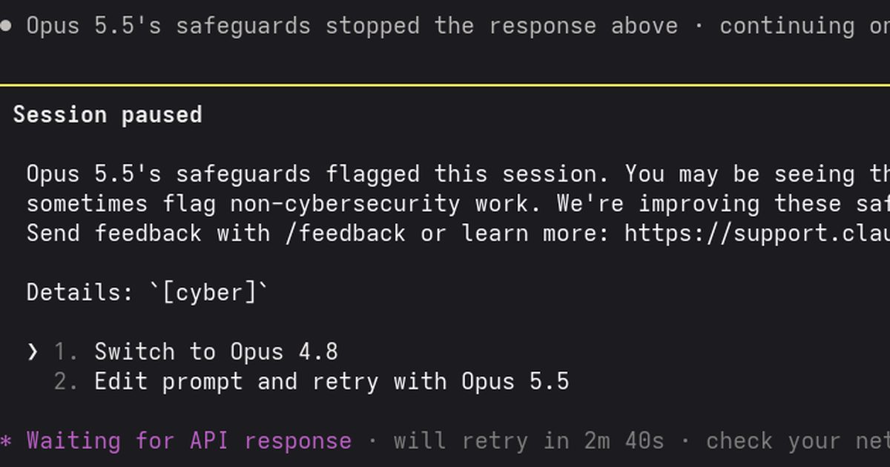
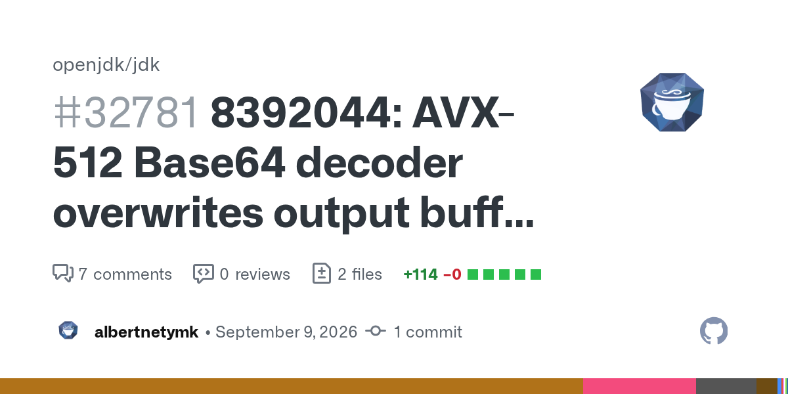
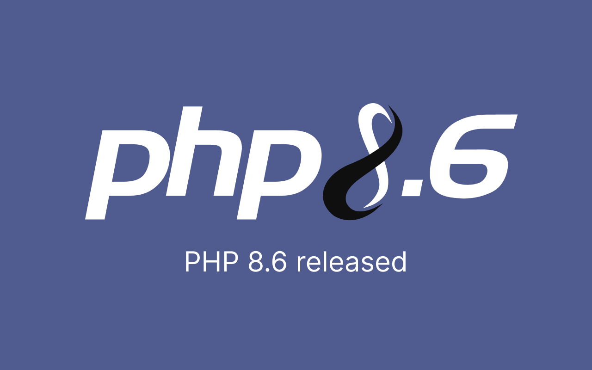
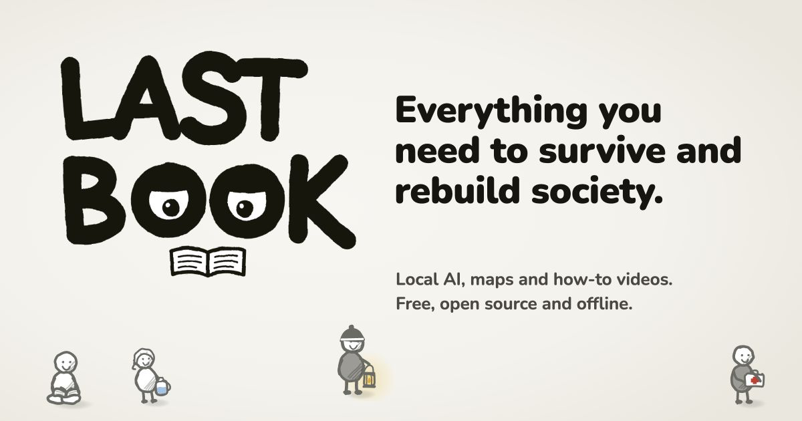

| Offer (last night) | $83.00 × 980m shares ≈ $81.3B |
| Headline value | $2T, fully diluted |
| Nasdaq market-cap math | 13,086,672,593 sh × $98 ≈ $1.28T |
| Session, per readers | “straight down since open”; “back to 1.5T” |
| Lockups (S-1) | 10% day one for some; waves at day 27; founders 29% at 180 days |
NEW YORK — Anthropic, priced overnight at $83.00 for 980 million Class A shares — roughly $81.3 billion at the offer — began trading on Nasdaq this morning and was immediately billed as a $2 trillion debut.[1][3] The round number deserves its asterisk: one reader worked the exchange’s own arithmetic — 13,086,672,593 shares outstanding at a then-current $98, or about $1,279,156,812,603 — and noted the $2T figure circulating in headlines is fully diluted value, “hence the discrepancy that will be seen across different reporting.”[2] Reuters’ own report, which frames the debut as putting “AI’s promise, peril” to a Wall Street test, would not load for this paper’s fetch; the thread supplies the numbers above.[1]
The valuation question ran all day. One reader asked how a company “with a revenue of close to $17 billion per quarter” reaches $2 trillion; another answered with the multiplication — about $68 billion a year, roughly thirty times revenue — and the growth rates needed to justify it.[2] A commenter who says he works in finance reported the professionals he talks to put a “realistic valuation backed by actual math” at $400–500 billion. The S-1’s lockup schedule also drew reads: certain employees may sell up to 10 percent of their holdings on day one, others in waves beginning 27 days after the prospectus filing, founders 29 percent at 180 days.[2]
The tape did not cooperate with the headline. Readers tracked the stock “straight down since open” — one still had it “up 20% from IPO price” — and another watched the diluted figure slip “back to 1.5T” intraday.[2] This morning’s edition carried the pricing at 304 points; the debut thread closed the snapshot at 680 points and 1,199 comments, the most-discussed story of the day by nearly a factor of four.[4]
BRUSSELS — The European Commission’s rollout of Matrix to more than 40,000 staff, first typeset in this morning’s paper at 265 points, returned to the front page at 620 — up 355 points, or 134 percent, the day’s only qualifying follow-up.[6] The Element write-up itself has moved — its URL now serves a conference-talks index — so this dispatch is typeset from the thread, which quotes the article where it matters: live presence indicators had to be switched off because “the load from live presence… started to affect performance.”[5][6]
The thread’s verdict is mixed. One reader calls Matrix’s encryption “a tire fire” and says the move to MLS “seems to be abandoned”; another links Slashdot coverage in which officials reportedly called the Commission’s Element Pro deployment “absolute shit” on usability.[6] A third multiplied the pain of “verifying my device” by 40,000. Defenders held the sovereignty line — Europe is “paying the high price of riding itself of US dependencies” — and one friend group’s self-hosted migration to ElementX reported clean notifications and well-designed iOS apps, apart from one member.[6]
When Chamberlain cut off third-party access to its myQ API in late 2023 and the official app filled with advertising, one owner documented the exit: two ratgdo32 boards at about $62 each, open-source firmware that speaks LiftMaster’s Security+ 2.0 protocol locally over the network the house already runs.[7] HomeKit integration worked immediately; a JSON status endpoint plus a nightly cron job now flags a door left open, a software rebuild of the mercury switch his father once wired to a hallway light.[7]
The result runs with no cloud, and the notifications say who opened the door — “which myQ never did.” The thread turned into a parts counter: a $30 Ekyro opener with no subscription, a Meross HomeKit interface, and a from-scratch ESP32 board for those who can solder.[8] The shared grievance is the ads themselves — software for hardware already paid for, reported to the app stores with no effect.[8]
An adenovirus genetically engineered to replicate only inside tumours — its replication switched on by the COX-2 enzyme, far more abundant in cancer cells than healthy ones — has stopped the growth of pancreatic tumours in all three patients treated so far, at one-tenth of the dose the trial is aiming for.[16] The first patient, treated a year ago with a tumour seven centimetres across, and the two since, are “all still alive and have clinically stable disease,” says Masato Yamamoto of the University of Minnesota, who presented the results at the American Society of Gene and Cell Therapy meeting in Boston.[16]
The delivery is endoscopic: a thin tube guided down the throat to the pancreas, an ultrasound probe on its end for aiming. Fifteen further patients will now receive higher doses.[16] The context is brutal — pancreatic cancer usually kills within three to six months of diagnosis, and its tumours are, in Yamamoto’s words, “hard as hockey pucks,” blocking chemotherapy. The caution is as real as the result: the trial has no control group, and pancreatic surgeon Kai Brown of Royal North Shore Hospital, Sydney, calls the data “hypothesis-generating,” noting oncology’s record of early signals that “vanished by the time rigorous phase III testing was done.”[16]
The thread’s specialists add scale: one reader counts 25 registered clinical trials of oncolytic viruses for pancreatic cancer and notes that engineered adenoviruses “rarely make it all the way to become a therapy in practice.”[17]
Anthropic’s research post, published on the morning of its market debut, reports that Claude solved two open problems in the theory of quantum gravity.[20] The first finished a calculation physicists set out in 2003 — whether the abrupt Hawking–Page phase transition, known since 1983, survives in a regime where spacetime has no definite shape. Claude ran “a small research group of copies of itself,” checking its math against known results, and found the transition is abrupt there too.[20]
The second fixed the ceiling of the “modular bootstrap” — a method that rules out inconsistent theories of quantum gravity by capping how light a model universe’s smallest black hole can be. Claude noticed a pattern in the numerical results physicists had missed, borrowed a method from sphere-packing mathematics — reproducing a sphere-packing result recently proved by an OpenAI model, with half the final proof following that proof’s strategy — and produced the exact ceiling, after an earlier agent had failed in 61 parallel attempts. The results were formally verified in the Lean proof checker in September; “Claude then wrote the paper with minimal guidance, and a physicist checked every main result.”[20]
The origin story is modest: an August side project by researcher Hongbin Chen, 22 candidate problems, agents left running about six weeks. The post’s own limits sentence is quoted in full elsewhere on this page.[20] The thread, noting the publication date, asks whether the results were checked and who gets credit; one physicist-reader calls the bootstrap ceiling “very exciting.”[21]

A senior product engineer writes that when he asked Claude Code to find “low-hanging fruit” security issues in his own service, it found a genuine flaw with a one-line fix — and then refused to proceed on safety grounds.[12] The exemption process he describes requires multi-day waits, forfeits data-retention protections, demands government ID or passport, and may still refuse: “approval to appropriately protect your own service.”[12]
His workaround was an EU-hosted open-weights model, GLM 5.3, which he says proved the vulnerability, then helped fix and verify it.[12] The thread supplies the sharpest corroboration: during the recent attack on HuggingFace, “closed models refused to help” and GLM-5 “is what HuggingFace used to thwart the swarm,” one reader recounts — while the same unrestricted tooling is what produced the hostile code in the first place.[13]
The post closes by charging the labs with making “the world an unsafer place”; its strongest thread reply is quieter: the safeguards “are ineffective at best, and don’t actually protect anything, and at worst make the global security posture weaker.”[13]
LONDON — The Investigatory Powers Tribunal, in an open judgment dated today, rejected the Home Secretary’s contention “that it would be damaging to national security to confirm the fact that the respondent has given Apple a technical capability notice” under section 253 of the Investigatory Powers Act 2016.[9] The notice’s contents remain secret: the Tribunal found the line between secret and open detail “better addressed separately,” with private and closed judgments withheld under rule 7, and a substantive hearing now likely in the first half of 2027.[9] The report that carried the story was blocked to this paper’s fetch; the judgment is the primary source.[10]
The judgment’s factual section records “extensive media reporting” that the notice requires Apple “to be able to maintain access to its users’ data in decrypted form,” and recites the transatlantic history: US intelligence officials announcing the demand had been dropped in August 2025, the Financial Times reporting a new order that September.[9] Apple’s first challenge was dismissed after a change of circumstances; this second claim began in July 2026.[9]
The thread’s closest reading is of Apple’s own wording: the old assurance that “nobody can access your data, not even Apple” became “Apple cannot access your data” — a formulation one reader dissects key-encryption-key by key-encryption-key to argue it “presents the same feel of assurance” with less coverage.[11]
Security Desk
Yesterday this paper typeset Java4Shell, the Base64 remote-code-execution flaw in OpenJDK; today the front page carries its prehistory. A pull request filed September 9 by an OpenJDK member describes the same territory precisely: in the AVX-512 Base64 decode path, inputs shorter than four bytes drive an output-size counter below zero, corrupting the mask and storing “past the logical output length… corrupting the heap.” The suggested fix was an early return to Java.[18]
The timeline assembled in the thread: a SIGSEGV crash was reported to Adoptium in June and isolated to Base64 in September; on October 1 the PR’s author wrote that Oracle had emailed asking him “to NOT proceed with a PR until receiving approval”; by October 28 it was “taken over by Oracle.” One reader found the merged Oracle commit’s message identical, word for word, to the PR’s fix.[19]
The uncomfortable question is heredity. Yesterday’s disclosure credited an AI-driven audit — “I told Codex to look at those areas like any serious security researcher in 2026” — and today’s thread asks whether the model independently found the bug or read the open report; the consensus is that no one can now prove either.[19] A second thread theme: the fix sat bot-flagged and unreviewed for months, “all it needed is someone to have a proper look.”[19]

PHP 8.6.0 arrived today with a compact feature list: partial function application using ? and … placeholders, a \Time\Duration class covering more than 250 years at nanosecond precision, an Io\Poll API built on epoll, kqueue and WSAPoll for event loops like ReactPHP and AMPHP, plus clamp(), a SortDirection enum and default values for readonly properties.[22]
The timing is the story’s edge: php.net had scheduled security releases for 14:00–14:30 UTC this afternoon across every supported branch — 8.5.13, 8.4.28, 8.3.37, 8.2.36 — with “the highest severity” rated CRITICAL, though those CRITICAL issues “require either non-default configuration or uncommon setups.”[23] The thread’s practitioners flagged the quieter wins: ZTS overhead reduction that one core contributor says could someday leave “only ZTS mode” and open a path to native async, and stream error handling that finally throws instead of returning false.[24] One reader also caught the release notes’ own clamp example with min and max inverted.[24]
Culture Desk
Lastbook, an open-source desktop application for Mac, Windows and Linux — deliberately not phones — downloads a survival and rebuilding library that works offline: first aid, water, food preservation, repairs, power and emergency planning, with 2,324 videos and 258,000-plus searchable map places including water points, fire stations and shelters.[14] Sizes run from 7.7 GB to about 388 GB, with an optional local Gemma model adding roughly 17 GB; the medical material is drawn from Hesperian, the World Health Organization and the Red Cross, and the project states plainly it “is not clinically reviewed.”[14]
The thread tests the premise against the scenario: a rebuild kit that dies with a two-year laptop battery draws skepticism — “surely this would need to be printed out?” — and one reader finds it “conspicuously light on the ‘society’ part,” with nothing on de-escalation or managing groups. Kiwix, the offline Wikipedia server, is the recurring alternative.[15]
FOR SALE: cloud garage-door app, ads included. Owner replaced it with two $62 boards and a cron job; notifications now name the operator.[7]
NOTICE: contents of a technical capability notice remain secret. Existence of said notice: now confirmed, by tribunal order.[9]
| UK Apple order | 390 pts · 171 cmts |
| Java4Shell prehistory | 307 pts · 82 cmts |
| Combined | 697 pts · 253 cmts |
The day in one line: Anthropic opened at a $2 trillion headline and spent the session giving some of it back; a tribunal ruled the UK cannot stay silent on its order to Apple; an engineered virus stopped pancreatic tumours in three patients at a tenth of the planned dose; and PHP shipped a major release hours after warning of critical-severity fixes for older branches.
| Stories typeset | 10 |
| Fresh stories | 9 |
| Follow-ups | 1 |
| Carried in digest | 0 |
| Combined points | 4,223 |
| Combined comments | 2,631 |
| Most-discussed | Anthropic debut (1,199) |
| Security desks’ share | 697 pts · 253 cmts |
| AI desks’ share | 1,361 pts · 1,474 cmts |
“Anthropic hits $2T.” The headline number is fully diluted value. By Nasdaq’s own outstanding-share count — 13,086,672,593 shares at $98 — the market cap was about $1.28 trillion when the thread did the math, and readers tracked the diluted figure as low as $1.5 trillion intraday. Same company, three same-day numbers.[2]
“Claude solves two open problems” — in model universes. Anthropic’s own post states neither result “describes our own universe directly” and neither has practical applications; one is a completed calculation set out in 2003, the other a proved ceiling that rules out theories without identifying one. “Solves” is the company’s word; the scope is the post’s.[20]
“Pancreatic cancer halted” — in three patients, with no control group. The tumours stopped growing but did not shrink; the dose was one-tenth of target; the data was presented at a conference, not in a peer-reviewed paper; and a pancreatic surgeon in the thread’s own coverage calls it “hypothesis-generating.”[16]
“What’s New in PHP 8.6” led with features on a patch day. The same site scheduled CRITICAL-severity security releases across all supported older branches for 14:00–14:30 UTC today — though php.net notes those CRITICAL issues require non-default configurations or uncommon setups.[23]
The Anthropic debut led at 680 points with the day’s largest thread by far; the European Commission’s Matrix migration returned as the only follow-up, up 355 points since morning, and nine stories were fresh. Three sources declined automated fetches — Reuters and the Macanorak report behind bot walls, the Element post now serving a conference page — so those stories are typeset from their threads, and the Apple story from the tribunal’s own judgment; the lead ran without an image. Everything else loaded in full.
Methodology: snapshot of the Hacker News front page taken at 22:00:54 UTC on Thursday, November 19, 2026, via the Algolia HN Search API (tags=front_page; 30 candidates returned). Points and comment counts are frozen at the snapshot and move afterwards. Deduplicated by story id against the previous four editions (manifest.json): nine stories are fresh; one returned as a follow-up — the Commission’s Matrix rollout, 620 points against 265 this morning, +355 and +134 percent, clearing the +40-percent-and-+150 bar; no other repeat qualified (15M web servers reached +37%, Ruby2ßhell +52% but +124 points). No digest and no second wire were required. Articles were fetched at publication time; reuters.com and macanorak.com blocked automated fetches and the element.io post has moved, so those stories are typeset from their threads and, for Apple, the tribunal’s judgment fetched in full. Images are the stories’ own header images, verified by magic bytes and credited to their hosts; no image was fabricated. Corrections & Clarifications items are drawn from today’s stories only.